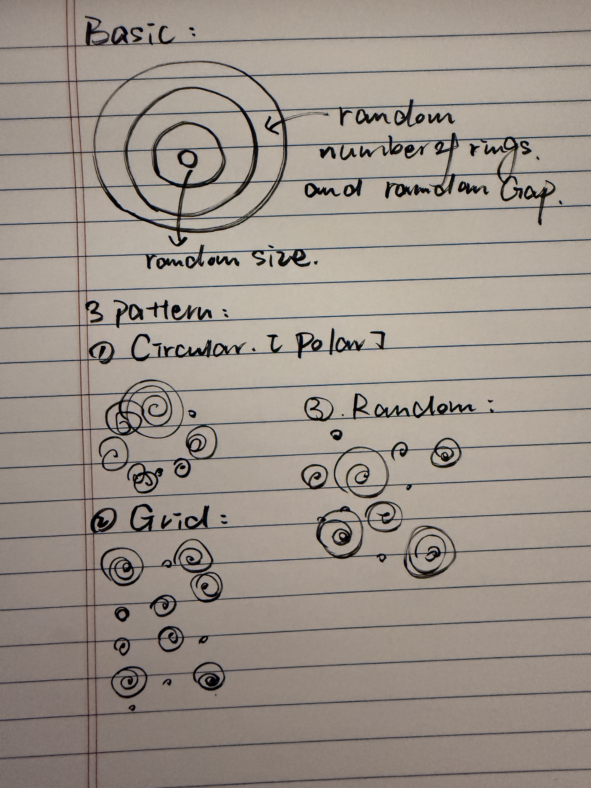
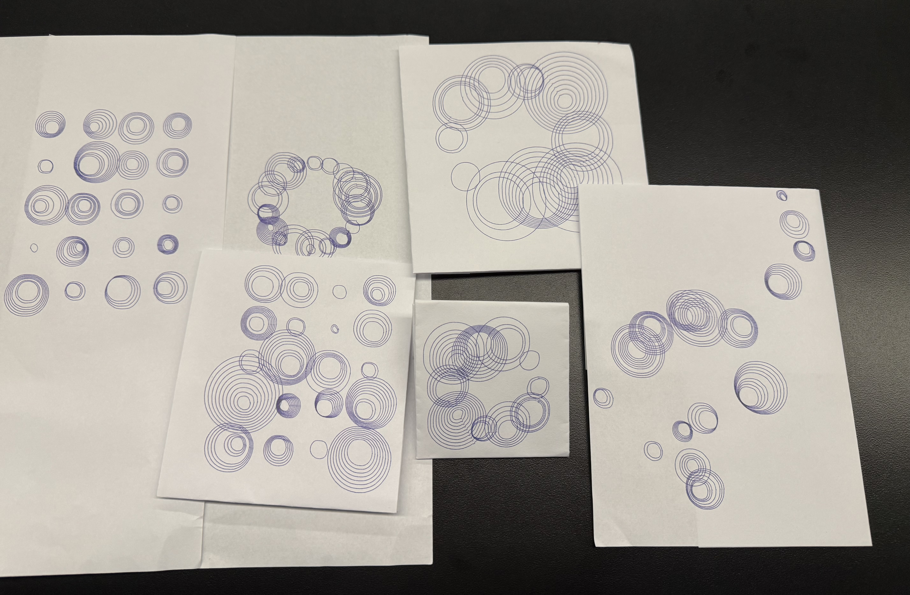

For this assignment, I wanted to try creating a generative art piece using only the simplest shapes. I ultimately chose circles because I felt that the simpler the shape, the more I could focus on the arrangement, repetition, and variation themselves. When a large number of circles are combined, they also create a clean, modern visual effect.
This piece primarily features three different patterns. The first is a circular arrangement, where I used p5.Polar to arrange different groups of circles around a central point. The second is a square arrangement, created using two for loops to form a relatively regular grid structure. The third is a free-form arrangement, which primarily uses random() to determine the position and size of each group of circles, resulting in a more spontaneous composition with some natural overlaps.
Each group of circles also undergoes its own variations. They can consist of anywhere from 1 to 10 circles, and the size and spacing of each ring are not exactly the same. I also introduced very slight offsets in the centers of the circles and randomly omitted a small number of them.
For me, this assignment also served as a summary of the material covered in previous lessons. I reused for loops, nested loops, random(), map(), conditional statements, and p5.Polar, combining these methods into a single piece. What I found most interesting is that even starting with a very simple circle, by altering the rules, repetition patterns, and degree of randomness, one can produce many completely different results. This process has begun to reveal to me the various possibilities that simple rules can offer in generative art.

